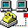
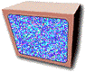

Welcome To The Thankful Internet Again!
| 7,949,784 Visitors |
| Fun Fact: On November 12, 1990, Tim Berners-Lee and Robert Cailliau formally proposed the World Wide Web at CERN. |
| Fun Fact: On November 21, 1969, the first permanent ARPANET link went into service between UCLA and the Stanford Research Institute. |
Sign the Guestbook
Enter Chat Room
Today's Sponsor is Tim Wiesemann!
HTTP Proxy now requires auth, see the docs link in our Apps section to get the password
Browsing from a vintage computer will be throttled by the Internet Archive :(
Proud member of TheOldNet Webring! Check some other cool websites!
[Previous site] - [Random site] - [Next site]
|
Random Homepages of the Day 10 of 29188 |
|
Index of /BourbonStreet/4924
|
|
|
|
10 random homepages of 3635 |
|
Welcome to Tom's Page!!!!!!!!!!!!
|
|
|

Gaming
Stomped - Blues News - PC Gamer - Mac Gamers Ledge - Game Demos - IGN - N64.com - Zelda HQ
|
|
Staff Favs
New York Times - Microsoft - Apple - IBM - Cybertown
Search Engines
Yahoo - Alta Vista - Web Crawler - Google
|
|
||
SNES Random
|
modern systems | |
Vintage Desktop Simulator!
|
modern systems | |
Retro Computing Internet Services List
|
modern systems | |

|
Wikipedia Proxy
|
retro systems |
HTTP Browser Proxy
|
all | |
Search Toolbar
|
retro systems | |
Netscape Simulator
|
modern systems | |
|
 |
Bulletin Board System
|
commodore 64 |
VRML 3D Gallery
|
modern systems | |
|
 |
UHF Television Station
|
raspberry pi |
|
Because of large bot traffic we now deny clients that do not have a valid User Agent set. May cause issues with certain vintage browsers Massive updates to the Web Ring including auto-banner generation. Sign up today! We now support integration with Protoweb! Sites from their service are automatically preferred, or it will fallback to the Internet Archive! The Internet Archive aggressively throttles their site, we have taken measure to help but only so much can be done :( Performance optimizations for home page and sub sections The Webring is Live! @ http://webring.theoldnet.com Added a lite version of the home page for low-memory systems. theoldnet.com/lite Patreon sponsors are now listed on the homepage and have been updated to the latest list We now offer a HTTP Browser Proxy in the Apps section! It requires a password found in the docs SSL is automatically turned on for modern computers and left off for old computers. |
Add this badge to your website!
Just copy and paste this code into your HTML!
The Old Net is an attempt to restore vintage web browsing on vintage computers.
It uses the Internet Archive: Wayback Machine API and a proxy that
strips out any
incompatible javascript and stitches together as many links as it can.
Please donate to the Internet Archive!
|
|
|
|
Follow TheOldNet on Instagram! |
|
|
Support TheOldNet on Patreon! |
Follow TheOldNet on Twitter! |
|
Subscribe to our Youtube Channel! |
Join TheOldNet Facebook Group! |
|
Join TheOldNet Discord! |
Join TheOldNet Reddit Community! |
webmaster@theoldnet.com
theoldnet.com/~rich
richardbettridge.com
Under Construction
Documentation